מערכת COT (Calculate Over Time) פותחה מתוך היכרות עמוקה עם השטח ועבודת המשמרות במעברי הגבול. מטרתה לעשות סדר בדו"חות הפיצול המורכבים, לאפשר תכנון מדויק של המשמרות, לאמוד את שווי השעות הנוספות והאש"ל בזמן אמת, ולנהל את יתרות החופש והמחלה בשקיפות מלאה.
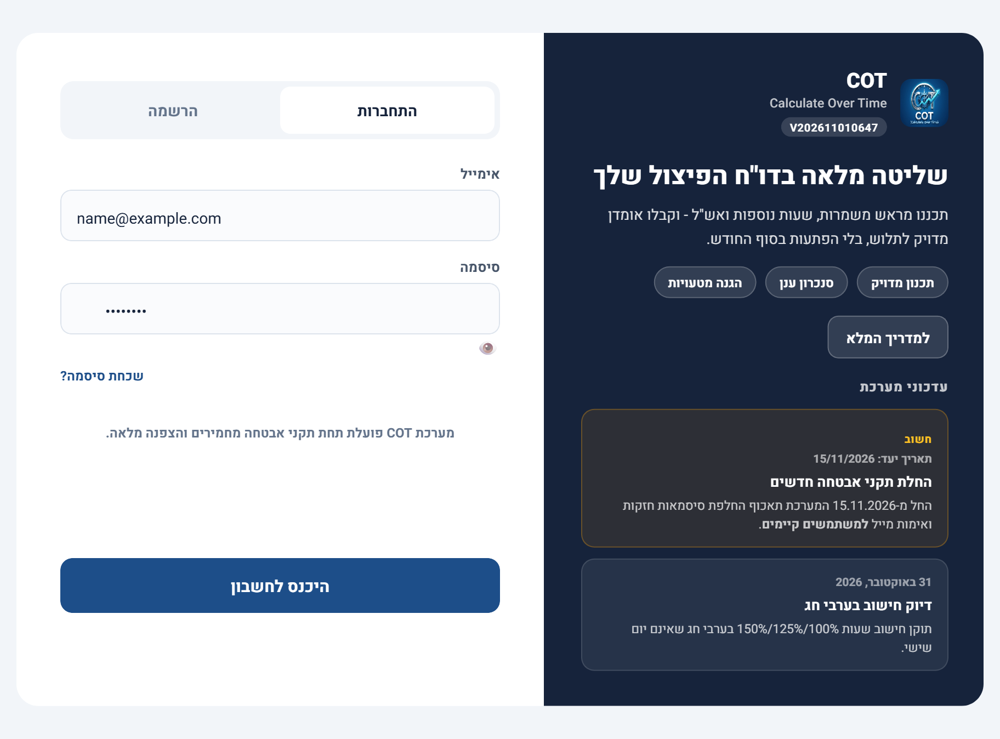
1. צעדים ראשונים: כניסה והגדרות בסיס
- הרשמה וכניסה: במסך הפתיחה, הזן כתובת אימייל וסיסמה. סיסמה חייבת להכיל 8 תווים לפחות, אותיות אנגלית בלבד, לפחות אות גדולה אחת, ספרה אחת, ותו מיוחד אחד (כפי שמוצג ברשימת הדרישות בעת ההרשמה). משתמש חדש ילחץ "צור חשבון", ומשתמש קיים ילחץ "היכנס לחשבון". המערכת נועלת את המסך אוטומטית לאחר 15 דקות ללא פעילות (הנתונים על המסך נשמרים ברקע, ולא נמחקים).
- הזנת נתוני שכר: בשורת הפאנל העליון, ודא ששמך, תעריף שעת הבסיס ותעריף האש"ל המעודכנים מוזנים כראוי לצורך חישוב מדויק.
- הגדרת יתרות פתיחה: בתחתית המסך תמצא את טבלת היתרות. לחץ על סמל המנעול (🔒) כדי לפתוח אותן לעריכה, הזן את יתרת הפתיחה מתלוש השכר האחרון שלך, ולחץ על "שמור גליון" לגיבוי מיידי לענן.
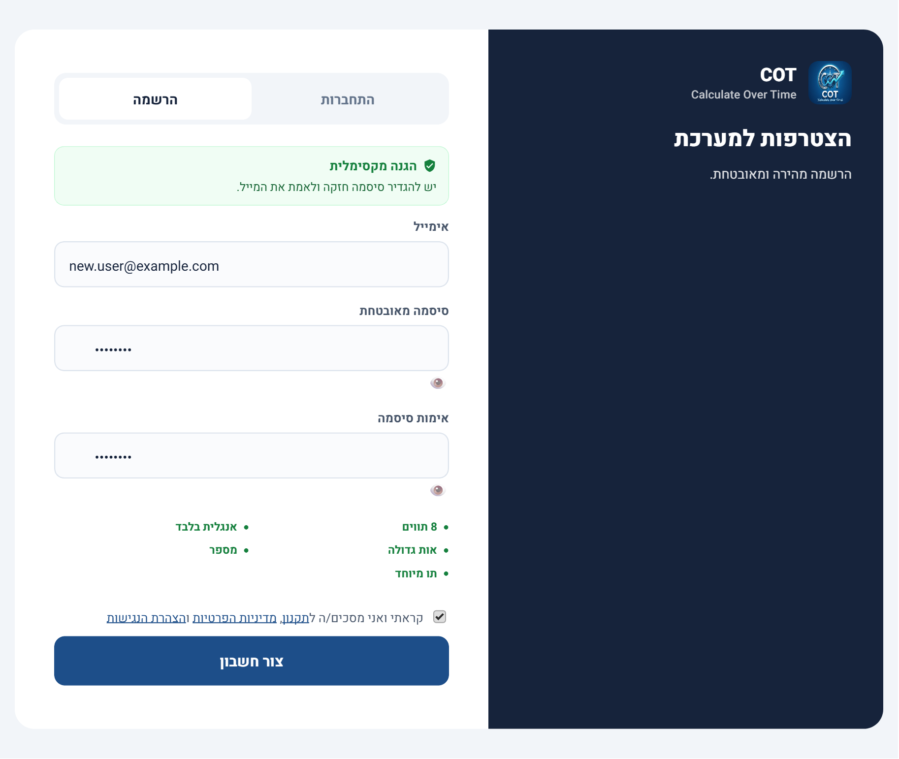
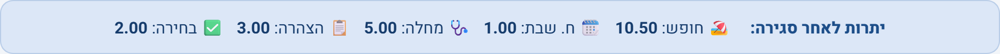
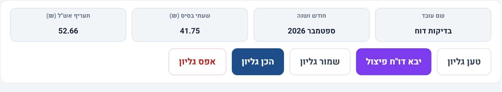
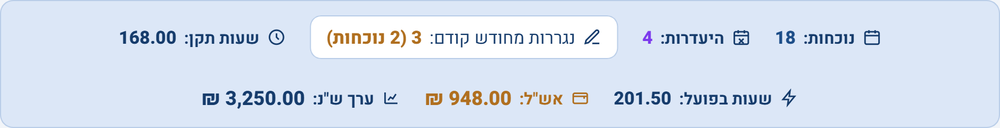
2. מנוע ההיעדרויות החכם
המערכת מבחינה אוטומטית בין נוכחות בפועל לבין היעדרויות, ומבצעת עבורך את החישובים והצביעות הרלוונטיות כדי למנוע בלבול:
- מילוי שעות וצבע סגול מודגש: כשמקלידים קוד היעדרות בעמודת "משמרת" (כמו
ח,מח,הצ), המערכת ממלאת אוטומטית את עמודות "תקן" ו"סה"כ שעות" בצבע סגול מודגש. ברוב המקרים הערך הוא 8.00 שעות; בערב חג ובחול המועד הערך הוא שעות התקן המיוחדות של אותו יום (למשל 4.5, 5.5 או 7, לפי הקבוע ב-holidays_db.js). - חסימת הזנה בימי מנוחה (שישי ושבת): המערכת חוסמת הזנת
ח(חופש),חש(חופש שבת),הצ(הצהרה),בח(בחירה),מבמ(מחלת בן משפחה) ו-הס(עפ"י הסכם) בימי מנוחה. לעומת זאת,מח(מחלה) ו-מיל(מילואים) מותרים גם בשישי ושבת - למשל כשעובד מתוכננת לו משמרת והוא חולה באותו יום. - חופש שבת (
חש): מוזן ביום חול (לא בסופ"ש - ראה סעיף קודם), מזכה ב-8 שעות תקן כמו שאר ההיעדרויות, ובנוסף מוריד יום אחד מיתרת "חופש שבת" - מופיע בעמודה הייעודית כ--1.00באדום בולט. - מילואים (
מיל): ביום חול המערכת מעניקה 8 שעות תקן (בסגול). בשישי ובשבת הרישום נספר לצורך תיעוד ימי המילואים, אך ללא שעות תקן כספיות לאותו יום.
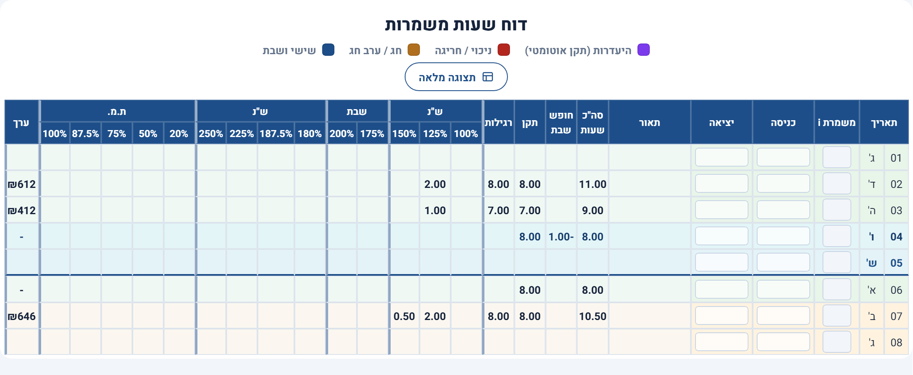
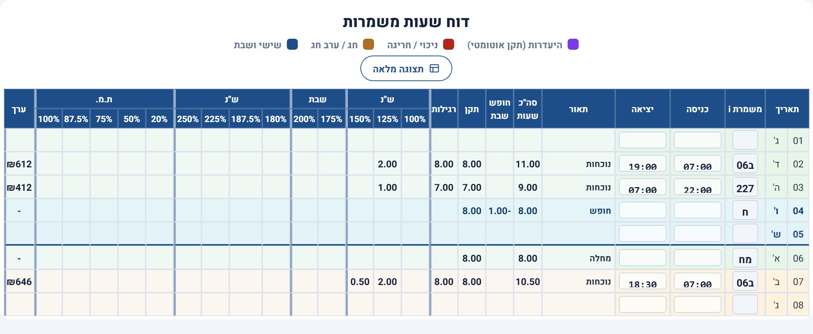
3. הזנת משמרות ועבודה שוטפת
המערכת תוכננה לחסוך זמן והקלדות, ומותאמת לעבודה זריזה עם המקלדת (Enter ומקשי החיצים).
- קודי משמרת מהירים: אין צורך להקליד שעות. בעמודת "משמרת" (לא בעמודת
"תאור" - זו מתמלאת אוטומטית), הקלד קוד כגון
ב06או102, והשעות יתמלאו לבד. שכחת קוד? לחיצה על כותרת העמודה "משמרת" (סמלi) תציג את כלל הקודים. - הקלדה רצופה ללא נקודתיים: בהזנה ידנית של שעה, הקלד
1530והמערכת תתרגם אוטומטית ל-15:30.
| קוד מהיר | שעות משמרת | תאור |
|---|---|---|
| 616 / 617 | 06:00-16:00/17:00 | משמרות בוקר מוקדמות / מאוחרות |
| 102 / 111 | 10:00/11:00-20:00 | משמרות צהריים |
| 217 / 227 | 21:00/22:00-07:00 | משמרות לילה רגילות / מאוחרות |
| ח / מח | - (אוטומטי) | חופש / מחלה (נצבע בסגול; ח נחסם בסופ"ש, מח מותר) |
| מיל | - (אוטומטי) | מילואים (נצבע בסגול, מותר לדיווח רציף גם בסופ"ש) |
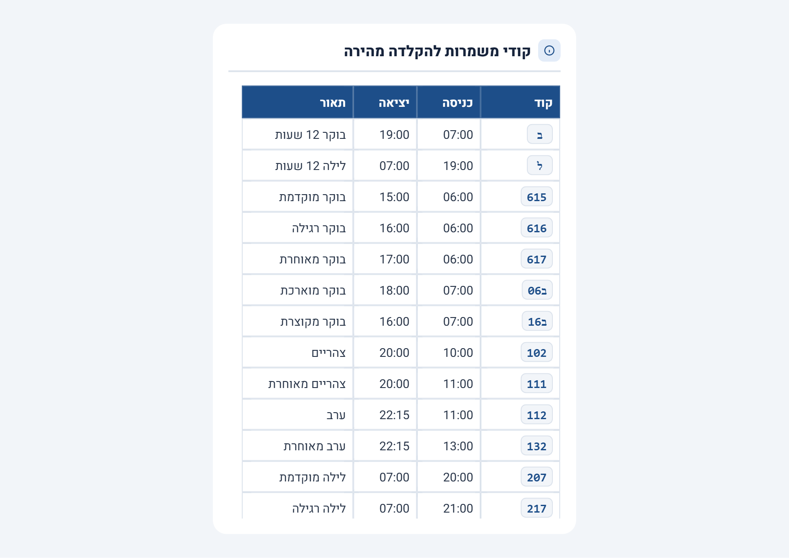
4. טיפים חכמים לתכנון שכר נבון
לתוספת "משמרת צהריים" (20%) יש לצבור לפחות 3 שעות רצופות בטווח 14:00-22:00. לדוגמה: משמרת בוקר מאוחרת (06:00-17:00) שהיציאה ממנה הוחתמה ב-16:59 תצבור רק 2 שעות ו-59 דקות בטווח - ותפסיד את כל תוספת המשמרת, ואף עשויה להקטין את תגמול האש"ל היומי.
- חפיפת שעות לילה: משמרת נחשבת "משמרת לילה" המזכה בתוספות, רק אם עבדת לפחות שעתיים מלאות בטווח 22:00-06:00.
- בקרה על משמרות נגררות: המערכת מתריעה על חריגה ממכסת 5 משמרות בשבוע קלנדרי. בתחילת החודש הראשון היא תבקש ממך להזין כמה משמרות ביצעת בשבוע האחרון של החודש הקודם.
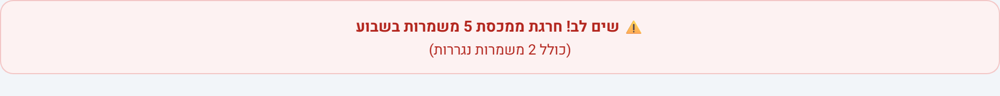
5. סיכום החודש וייצוא הנתונים
פס קוביות הסיכום, בראש המסך (מעל הטבלה), מרכז את ימי הנוכחות וההיעדרות, שעות התקן והנוספות, אומדן שווי השעות הנוספות וקצובת האש"ל. טבלת היתרות המלאה נמצאת בתחתית המסך.
- סגירת חודש: לאחר וידוא הנתונים, לחיצה על "סגור חודש" מעבירה את יתרות הסיום להיות יתרות הפתיחה של החודש הבא, ומגבה אותן בענן. בכניסה הבאה לחודש החדש, היתרות יופיעו מוכנות מראש.
- ייצוא לאקסל או ל-PDF: הכפתור הירוק "ייצא לאקסל" מאפשר ליצור קובץ חדש ומעוצב, או להוסיף לשונית לחודש הנוכחי בתוך קובץ אקסל קיים ששמור אצלך. הכפתור האדום "הורד PDF" מייצר קובץ PDF ישירות, בלי תלות בהגדרות הדפסה של הדפדפן.
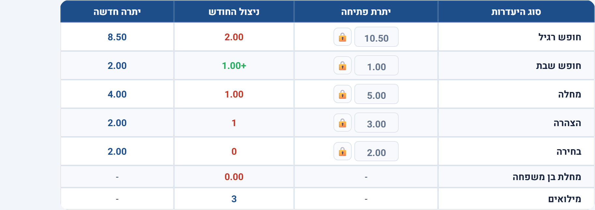
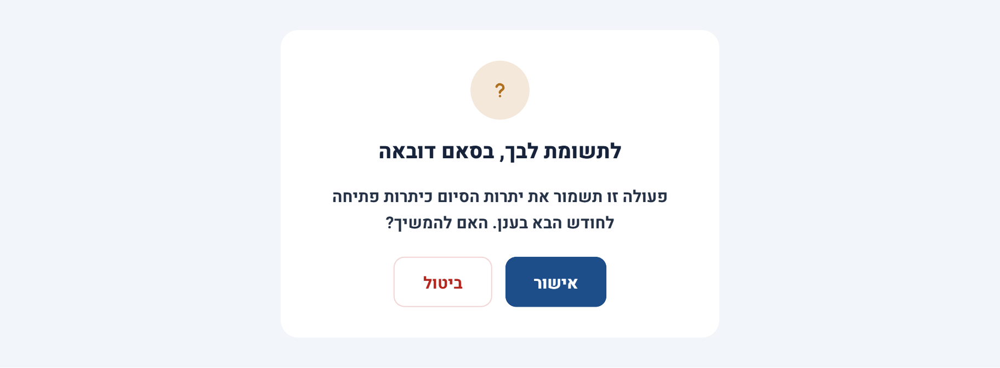
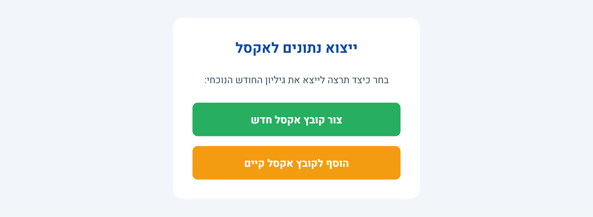
6. עדכונים ותחזוקה
- מדריך למשתמש בתוך האפליקציה: כפתור "מדריך למשתמש" בסרגל העליון פותח גרסה מקוצרת ותמציתית של ההדרכה הזו, ישירות בתוך המערכת - שימושי לתזכורת מהירה בלי לצאת מהעבודה.
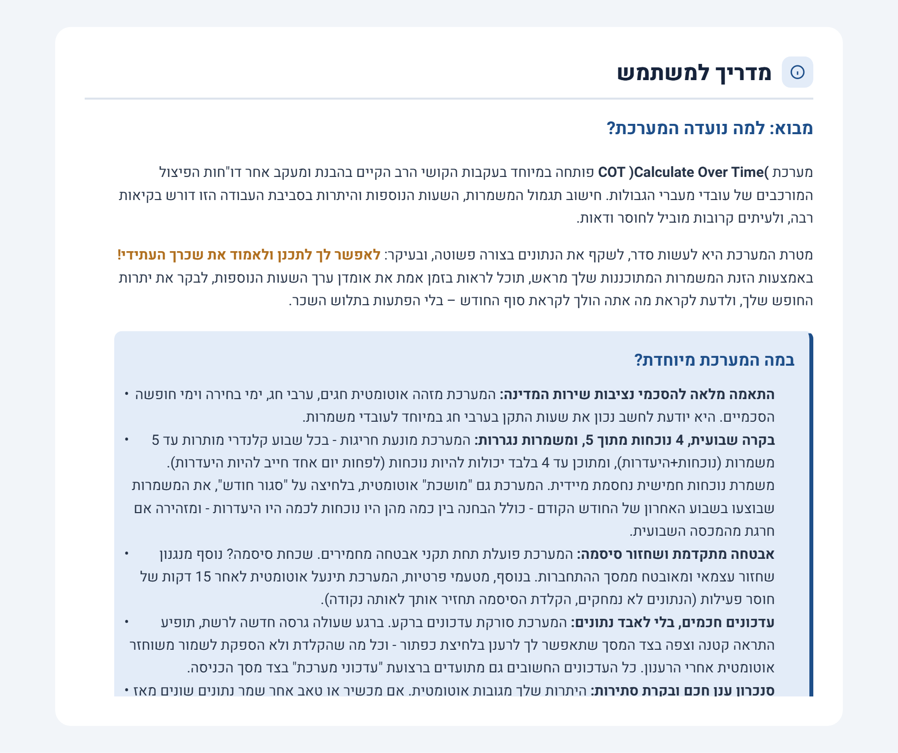
- עדכון גרסה בלי לאבד נתונים: כשעולה גרסה חדשה, תופיע חלונית קטנה בפינת המסך. לחיצה על "רענן עכשיו" מעדכנת את המערכת - וכל מה שהקלדת ולא הספקת לשמור משוחזר אוטומטית אחרי הרענון.
- מסך תחזוקה: בעת עדכון רוחבי, ייתכן ויוצג מסך תחזוקה זמני (גלגל שיניים מסתובב). זהו מצב תקין - המערכת תחזור לפעילות בתוך דקות ספורות.
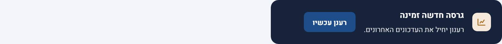
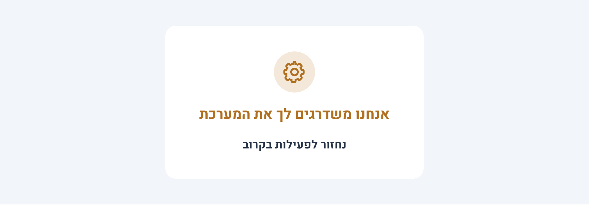
נספח: כל קודי ההיעדרות
| קוד | משמעות | מותר בסופ"ש? |
|---|---|---|
| ח | חופש רגיל | לא |
| חש | חופש שבת (מוריד יום מהיתרה הייעודית) | לא |
| מח | מחלה | כן |
| מיל | מילואים | כן (ללא שעות תקן כספיות בסופ"ש) |
| הצ | הצהרה | לא |
| בח | בחירה | לא |
| מבמ | מחלת בן משפחה | לא |
| הס | עפ"י הסכם | לא |
content/shift-info.he.html,
בלי צורך בגרסה חדשה. חוברת זו היא מסמך נפרד להדרכה מודפסת/מפורטת.